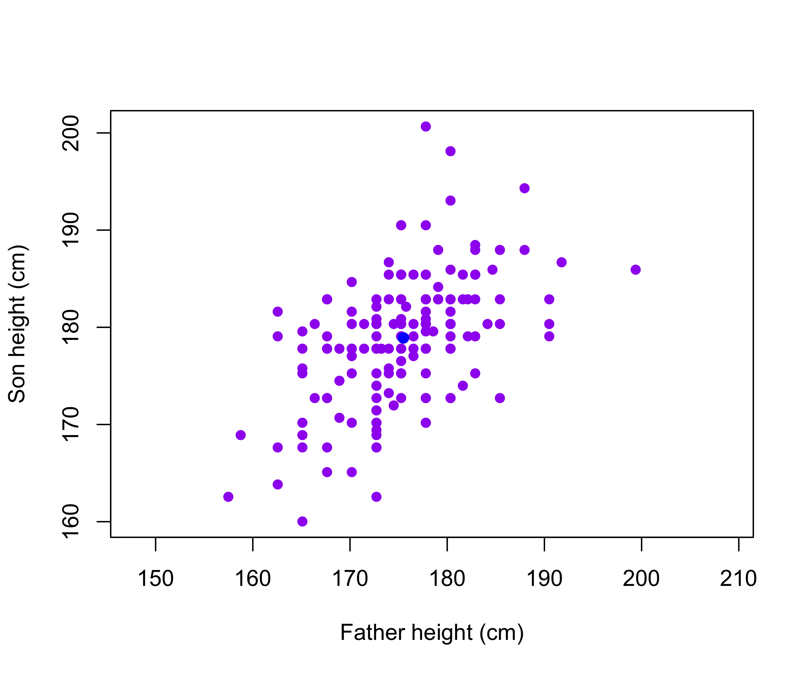
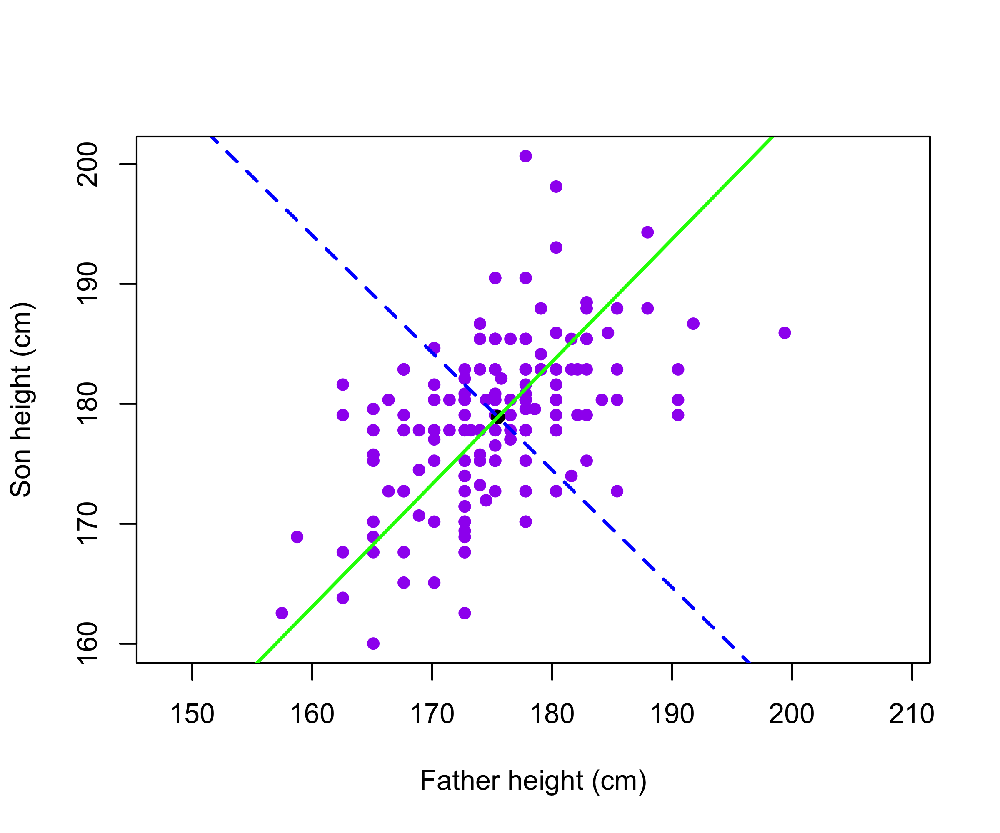
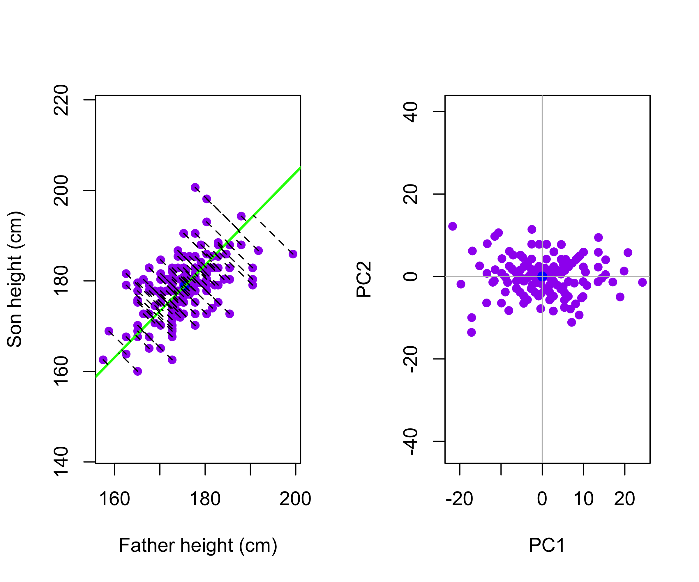
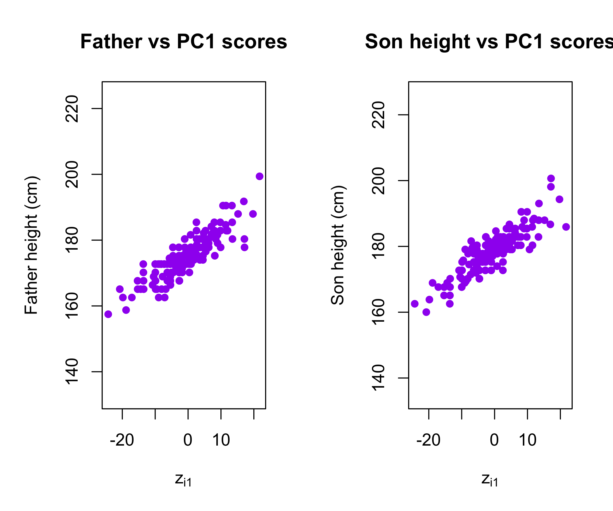
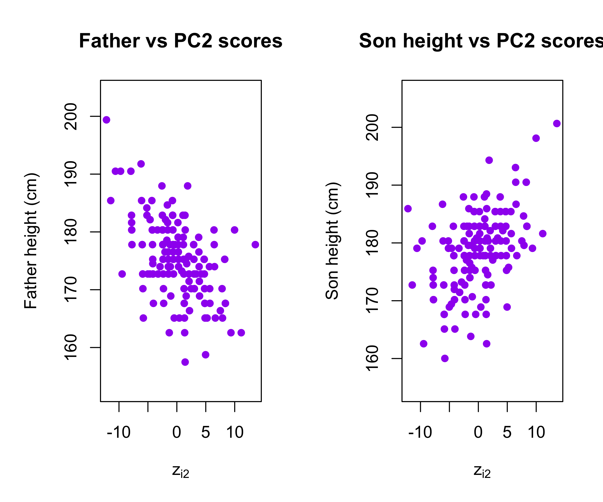
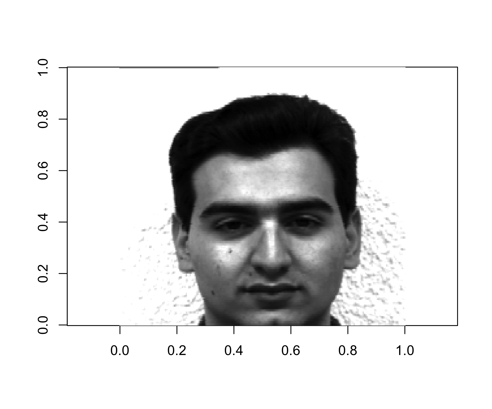
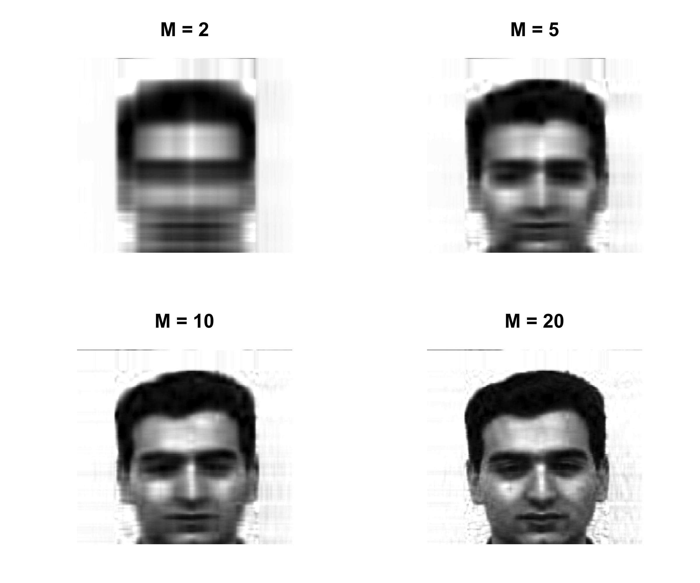
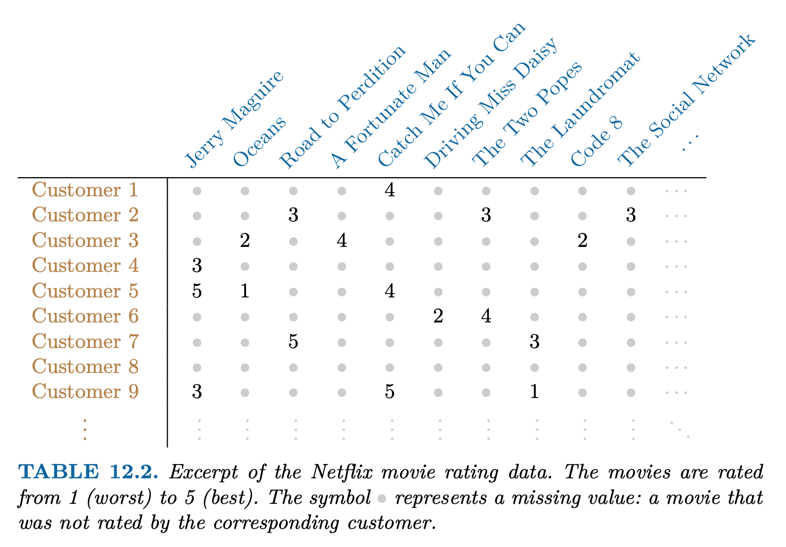

Father Height
[1,] 199.39 185.928
[2,] 175.26 180.848
[3,] 175.26 190.500
[4,] 175.26 177.800
[5,] 175.26 185.420
[6,] 176.53 179.070 Father Height
175.4905 178.9070 Introduction to Statistical Learning - PISE
Ca’ Foscari University of Venice
This unit will cover the following topics:
PCA produces a low-dimensional representation of a dataset
It finds a sequence of linear combinations of the variables that have maximal variance and are mutually uncorrelated
Apart from producing derived variables for use in supervised learning problems, PCA also serves as a tool for data visualization
Father Height
[1,] 199.39 185.928
[2,] 175.26 180.848
[3,] 175.26 190.500
[4,] 175.26 177.800
[5,] 175.26 185.420
[6,] 176.53 179.070 Father Height
175.4905 178.9070 The data matrix contains paired observations of father and son heights (in centimeters), where each row corresponds to a single family (using only the first son per father), and the two columns correspond to: Father the father’s height, and Height, the son’s height.
Thus, \mathbf{X} is an n \times 2, where n=173 is the number of distinct fathers in the dataset.
The goal of the analysis is to summarize the relationship between fathers’ and sons’ heights using a single underlying dimension (tallness) that captures their shared variation.

The first principal component of a set of features X_1, X_2, ..., X_p is the normalized linear combination of the features
Z_1 = \phi_{11}X_1 + \phi_{21}X_2 + \cdots + \phi_{p1}X_p
that has the largest variance. By normalized, we mean that:
\sum_{j=1}^{p} \phi_{j1}^2 = 1
We refer to the elements \phi_{11}, ..., \phi_{p1} as the loadings of the first principal component. Together, the loadings make up the principal component loading vector: \phi_1 = (\phi_{11} \ \phi_{21} \ \cdots \ \phi_{p1})^T
We constrain the loadings so that their sum of squares is equal to one. Otherwise, arbitrarily large values would lead to arbitrarily large variance

The father and son heights, measured in centimeters, are shown as purple circles. The green solid line indicates the first principal component direction, and the blue dashed line indicates the second principal component direction.

The Galton data are shown, where fathers’ heights and sons’ heights are plotted as purple points. The mean father height and mean son height are indicated by a blue circle.
Left: The first principal component direction is shown in green. It is the direction along which the data exhibit the greatest variability. The perpendicular distances from each observation to this line are illustrated by black dashed segments. The blue dot represents (\overline{\mathrm{Father}}, \overline{\mathrm{Height}}).
Right: The data from the left panel have been rotated so that the first principal component direction aligns with the x-axis.
Mathematically, the first principal component can be written as a linear combination of the centered variables:
Z_1 = 0.700\,(\mathrm{Father} - \overline{\mathrm{Father}}) + 0.714\,(\mathrm{Height} - \overline{\mathrm{Height}})
Here, the coefficients \phi_{11}=0.7 and \phi_{21}=0.714 (called loadings) define the principal component direction. They satisfy 0.7^2 + 0.714^2 =1.
Since both loadings are positive and of similar magnitude, Z_1 is essentially an average of father’s and son’s heights, capturing a common overall height dimension. For each family i, z_{i1} = 0.700\,(\mathrm{Father}_i - \overline{\mathrm{Father}}) + 0.714\,(\mathrm{Height}_i - \overline{\mathrm{Height}})
The values of z_{11},z_{21},\ldots,z_{n1} are known as the first principal component scores.

Plots of the first principal component scores z_{i1} versus father height and son height. The relationships are strong.

Plots of the second principal component scores z_{i2} versus father height and son height. The relationships are weak.
Suppose we have an n \times p data set \mathbf{X}. Since we are only interested in variance, we assume that each of the variables in \mathbf{X} has been centered to have mean zero (that is, the column means of \mathbf{X} are zero)
We then look for the linear combination of the sample feature values of the form
z_{i1} = \phi_{11}x_{i1} + \phi_{21}x_{i2} + \cdots + \phi_{p1}x_{ip}
for i = 1, ..., n that has largest sample variance, subject to the constraint that \sum_{j=1}^{p} \phi_{j1}^2 = 1
Since each of the x_{ij} has mean zero, then so does z_{i1} (for any values of \phi_{j1}). Hence the sample variance of the z_{i1} can be written as
\frac{1}{n} \sum_{i=1}^{n} z_{i1}^2
The first principal component loading vector solves the optimization problem:
\max_{\phi_{11}, ..., \phi_{p1}}\sum_{i=1}^{n} \left( \sum_{j=1}^{p} \phi_{j1} x_{ij} \right)^2\quad \mathrm{subject\,\,to\,\,}\sum_{j=1}^{p} \phi_{j1}^2 = 1.
This problem can be solved via singular value decomposition (SVD) of the matrix \mathbf{X}, a standard technique in linear algebra.
We refer to Z_1 as the first principal component, with realized values z_{11}, \ldots, z_{n1}
The loading vector \phi_1 with elements \phi_{11},\phi_{21}, \ldots, \phi_{p1} defines a direction in feature space along which the data vary the most.
If we project the n data points x_1,\ldots,x_n onto this direction, the projected values are the principal component scores z_{11},z_{21},\ldots,z_{n1} themselves.
The second principal component is the linear combination of X_1,...,X_p that has maximal variance among all linear combinations that are uncorrelated with Z_1.
The second principal component scores z_{12},z_{22},\ldots,z_{n2} take the form z_{i2} = \phi_{12}x_{i1} + \phi_{22}x_{i2} + \cdots + \phi_{p2}x_{ip} where \phi_2 is the second principal component loading vector, with elements, with elements \phi_{12},\phi_{22}, \ldots, \phi_{p2}.
The principal component directions \phi_1, \phi_2, \phi_3, \ldots are the ordered sequence of right singular vectors of the matrix \textbf X, and the variances of the components are 1/n times the squares of the singular values. There are at most \min(n−1,p) principal components.
Let \mathbf{Z} = ( \mathbf{z}_1 \,\, \mathbf{z}_2 \,\, \ldots \,\, \mathbf{z}_p ) denote the matrix of principal component scores, and let \mathbf{\Phi} = ( \phi_1 \,\, \phi_2 \,\, \ldots \,\, \phi_p ) denote the matrix of loading vectors
The first principal component loading vector has a very special property: it defines the line in p-dimensional space that is closest to the n observations (using average squared Euclidean distance as a measure of closeness)
The notion of principal components as the dimensions that are closest to the n observations extends beyond just the first principal component.
For instance, the first two principal components of a data set span the plane that is closest to the n observations, in terms of average squared Euclidean distance.


Ninety observations simulated in three dimensions. The observations are displayed in color for ease of visualization.
Left: the first two principal component directions span the plane that best fits the data. The plane is positioned to minimize the sum of squared distances to each point.
Right: the first two principal component score vectors give the coordinates of the projection of the 90 observations onto the plane.
To understand the strength of each principal component, we consider the proportion of variance explained (PVE) by each component.
The total variance in the data (assuming the variables are centered) is \sum_{j=1}^{p} \mathrm{Var}(X_j) = \sum_{j=1}^{p} \frac{1}{n} \sum_{i=1}^{n} x_{ij}^2.
The variance explained by the m-th principal component is \mathrm{Var}(Z_m) = \frac{1}{n} \sum_{i=1}^{n} z_{im}^2.
It can be shown that the total variance is preserved under PCA: \sum_{j=1}^{p} \mathrm{Var}(X_j) = \sum_{m=1}^{M} \mathrm{Var}(Z_m), \quad \text{where } M = \min(n-1, p).
The proportion of variance explained (PVE) by the m-th principal component is given by the ratio \mathrm{PVE}_m = \frac{\sum_{i=1}^{n} z_{im}^2} {\sum_{j=1}^{p} \sum_{i=1}^{n} x_{ij}^2}, which is a value between 0 and 1.
The PVEs sum to one. We sometimes display the cumulative PVEs
The Singular Value Decomposition expresses any matrix, such as an n \times p matrix \mathbf{X}, as the product of three other matrices:
\mathbf{X = U D V^\mathsf{T}}
where:
\mathbf{U} is a n \times p column orthonormal matrix containing the left singular vectors.
\mathbf{D} is a p \times p diagonal matrix containing the singular values of \mathbf{X}.
\mathbf{V} is a p \times p column orthonormal matrix containing the right singular vectors.
In terms of the shapes of the matrices, the SVD decomposition has this form:
\begin{bmatrix} & & \\ & & \\ & \mathbf{X} & \\ & & \\ & & \\ \end{bmatrix} = \ \begin{bmatrix} & & \\ & & \\ & \mathbf{U} & \\ & & \\ & & \\ \end{bmatrix} \ \begin{bmatrix} & & \\ & \mathbf{D} & \\ & & \\ \end{bmatrix} \ \begin{bmatrix} & & \\ & \mathbf{V}^\mathsf{T} & \\ & & \\ \end{bmatrix}
If we assume that each of the variables in \mathbf{X} has been centered to have mean zero (that is, the column means of \mathbf{X} are zero), then \mathbf{X} = \mathbf{Z} \mathbf{\Phi}^\mathsf{T} where \mathbf{Z} = \mathbf{UD} and \mathbf{\Phi}=\mathbf{V}.
The Eckart–Young theorem (1936) addresses the problem of approximating a matrix by one of lower rank.
Let \mathbf{X} be an n \times p rectangular matrix (centered). The best M-dimensional approximation \hat{\mathbf{X}} to \mathbf{X} in the least-squares sense, is obtained by solving: \min_{\mathrm{rank} (\hat{\mathbf{X}})=M }\Big\{ \sum_{i=1}^{n}\sum_{j=1}^{p}(x_{ij} - \hat x_{ij} )^2 \Big\}
The solution is \hat{x}_{ij} = \sum_{m=1}^{M} z_{im} \phi_{jm} or, in matrix form, \hat{\mathbf{X}} = \mathbf{U}_M \mathbf{D}_M \mathbf{V}^\mathsf{T}_M = \mathbf{Z}_M \mathbf{\Phi}_M^\mathsf{T}
If you think about it, the SVD is of great utility because it tells us that the best 1-rank approximation, in the least squares sense, of any matrix \mathbf{X} is \hat{x}_{ij} = z_{i1} \phi_{j1}
This implies that, from a conceptual standpoint, we can approximate the n \times p numbers in \mathbf{X} with just n + p values: n numbers in \mathbf{z}_1 and p numbers in \phi_1.

Obtain the best rank-M approximation of the centered matrix \mathbf{X} \hat{\mathbf{X}}_M = \mathbf{Z}_M \mathbf{\Phi}_M then construct the compressed image \hat{\mathbf{X}}_M + \mathbf{1}_n \bar{x} ensuring that all elements lie in the interval [0,1], where \mathbf{1}_n is an n\times 1 vector of ones, and \bar{x} is the 1\times p vector of the column means.

It is often the case that data matrices \mathbf{X} have missing entries, often represented by NAs (not available).
This is a nuisance, since many of our modeling procedures, such as linear regression and GLMs require complete data.
Sometimes imputation is the prediction problem! — as in recommender systems.
One simple approach is mean imputation — replace missing values for a variable by the mean of the non-missing entries.
This ignores the correlations among variables; we should be able to exploit these correlations when imputing missing values.
We assume values are missing at random; i.e. the missingness should not be informative.
We present an approach based on principal components.

Netflix users rate movies they have seen, usually a very from 1 (worst) to 5 (best). The symbol • represents a missing value: a movie that was not rated by the corresponding customer. small fraction of available movies.
Predicting missing ratings provides a way to recommend movies to users. Matrix completion is one of the primary tools.
Chapter 6
6.3.1 An Overview of Principal Components Analysis
Chapter 12: Unsupervised Learning
12.1 The Challenge of Unsupervised Learning
12.2 Principal Components Analysis
12.3 Missing Values and Matrix Completion
Video SL 12.1 Principal Components - 12:37
Video SL 12.2 Higher Order Principal Components - 17:40